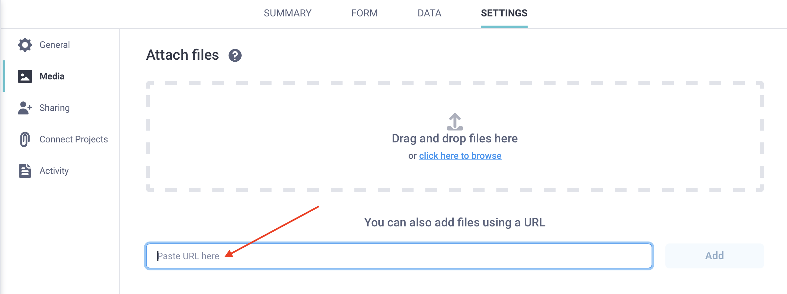

Search the knowledge base, browse our resources, and visit our Community Forum for more detailed information
Última actualización: 27 Jan 2026
KoboToolbox te permite cargar archivos multimedia y archivos de datos externos para usarlos en formularios durante la recolección de datos. Este artículo describe los tipos de archivos compatibles y explica cómo cargar archivos multimedia y archivos de datos externos a tu proyecto desde tu dispositivo local o mediante una URL.
Para obtener más información sobre los archivos y multimedia de los proyectos, consulta Introducción a archivos y multimedia en los proyectos.
KoboToolbox permite cargar los siguientes archivos:
Archivos multimedia, como imágenes, grabaciones de audio y videos, para ayudar a los encuestados a comprender mejor las preguntas y enriquecer tu formulario.
Para aprender a incluir imágenes, videos o grabaciones de audio en XLSForm, consulta Agregar archivos multimedia a un XLSForm.
Archivos de datos externos, como archivos CSV o XML, para gestionar listas de opciones extensas o dar soporte a la lógica del formulario. El uso de archivos externos facilita la reutilización y actualización de conjuntos de datos sin necesidad de editar el formulario, lo que reduce el mantenimiento continuo del formulario y favorece una recolección de datos consistente y de alta calidad.
Para aprender a adjuntar conjuntos de datos externos a tu formulario, consulta Extraer datos de un archivo CSV externo y Seleccionar opciones de un archivo externo en XLSForm.
Actualmente se admiten los siguientes archivos para cargar en KoboToolbox:
Tipo |
Extensiones de archivo |
|---|---|
Imagen |
.jpeg, .png, .svg |
Audio |
.aac, .aacp, .flac, .mp3, .mp4, .mpeg, .ogg, .wav, .webm, .x-m4a, .x-wav |
Video |
.3gpp, .avi, .flv, .mov, .mp4, .ogg, .qtff, .webm, .wmv |
Archivo |
.csv, .xml, .zip, .geojson |
Después de agregar referencias a archivos multimedia o archivos externos en tu formulario, debes cargar esos archivos en tu proyecto. Esto se hace en la página CONFIGURACIÓN > Archivos multimedia de tu proyecto.
Para cargar archivos y multimedia desde tu dispositivo local:
Inicia sesión en tu cuenta de KoboToolbox.
Abre tu proyecto y ve a la página CONFIGURACIÓN.
Abre la pestaña Archivos multimedia.
Carga los archivos que usa tu formulario. Los nombres de los archivos deben coincidir exactamente con los nombres referenciados en el formulario.
Implementa o reimplementa el formulario para aplicar los cambios.

Nota: El tamaño máximo de archivo para las cargas es de 100 MB. Los archivos que superen este tamaño deben reducirse antes de cargarlos.
También puedes cargar un archivo en KoboToolbox proporcionando una URL directa al archivo. Esto puede ser útil si tu archivo está alojado en línea, como un archivo CSV almacenado en un repositorio de GitHub.
Para cargar archivos y multimedia mediante URL:
Inicia sesión en tu cuenta de KoboToolbox.
Abre tu proyecto y ve a la página CONFIGURACIÓN.
Abre la pestaña Archivos multimedia.
Pega una URL válida en el campo «También se pueden agregar archivos usando una URL» (consulta los requisitos a continuación). Haz clic en Agregar.
Implementa o reimplementa el formulario para aplicar los cambios.

Nota: El nombre del archivo al final de la URL debe coincidir exactamente con el nombre del archivo referenciado en el formulario.
La URL debe cumplir los dos requisitos siguientes:
La URL debe terminar con una extensión de archivo compatible (por ejemplo, .png, .jpg o .csv).
La URL debe abrir el archivo directamente en tu navegador, no una página web que contenga el archivo. La URL no funcionará si apunta a una página de un servicio como Google Drive, GitHub o Dropbox.
Nota: Si el archivo se elimina o deja de estar disponible, dejará de funcionar en KoboToolbox.
Para las imágenes, usa la dirección directa de la imagen desde el sitio web de origen.
Para obtener una URL de imagen utilizable:
Abre la página web que contiene la imagen.
Haz clic derecho sobre la imagen y selecciona Copiar dirección de imagen (o la opción equivalente en tu navegador).
Confirma que la URL termina con una extensión de imagen (por ejemplo, .png o .jpg).
Pega la URL en tu navegador para confirmar que abre la imagen directamente.
Para los archivos .csv, la URL debe abrir el contenido CSV sin procesar directamente en tu navegador. Un método habitual es alojar el CSV en GitHub y usar el enlace Raw:
Sube o confirma tu archivo .csv en un repositorio de GitHub.
Abre el archivo CSV en GitHub.
Haz clic en Raw. El contenido del CSV debe mostrarse directamente en tu navegador.
Copia la URL de la barra de direcciones de tu navegador.
Nota: Google Sheets publicado como CSV no es compatible con este flujo de trabajo, ya que KoboToolbox no acepta el formato que produce ese método.
Si actualizas el archivo CSV en la misma URL, KoboToolbox reflejará el archivo actualizado tras un breve retraso. Para obtener las actualizaciones de forma más consistente, recomendamos reimplementar el formulario con regularidad.
Una vez que el archivo esté disponible en KoboToolbox, referencíalo de la misma manera que lo harías con otros archivos multimedia o archivos de opciones cargados:
En preguntas de tipo select_one_from_file o select_multiple_from_file
Dentro de la función pulldata()
En las columnas de multimedia de tu XLSForm (image, audio, video)
Al hacer referencia a los archivos cargados, usa únicamente el nombre del archivo y su extensión al final de la URL (por ejemplo, choices.csv o photo.jpg). No incluyas la URL completa en estos campos.
Did you find what you were looking for? Was the information clear? Was anything missing?
Share your feedback to help us improve this article!